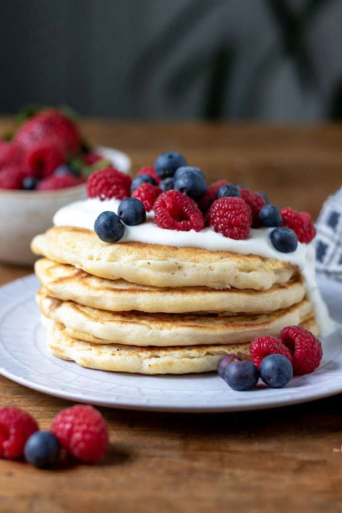

Vegan Pancakes
Description
These vegan American-style pancakes are really thick and fluffy, rather than thin, like crepes. They're perfect for stacking with a drizzle of maple syrup!
Ingredients
- 1 ⅓ cups (300 ml) dairy-free milk (almond, soy etc...)
- 2 tablespoons vegetable oil plus more for frying
- 2 teaspoons lemon juice or apple cider vinegar
- 1 teaspoon vanilla extract
- 1 ½ cups (175g) all purpose (plain) flour
- 2 tablespoons cornstarch / cornflour
- 2 teaspoons baking powder
- 2 teaspoons sugar optional
Steps
- In a mixing bowl, stir together the milk, oil, lemon juice and vanilla. Let stand for 5 minutes.
- Sift in the flour, cornflour and baking powder and mix.
- It will still be slightly lumpy, but don’t over-mix or the pancakes will be tough. Set the mixture aside, letting it rest for 5 minutes for fluffier results.
- Add a drizzle of oil to a large non-stick frying pan over a medium heat. Ladle small rounds onto the pan and cook for 1-2 minutes on each side until bubbles appear on the surface and the underside turns golden. Flip and cook the other side for 1-2 minutes or until golden.